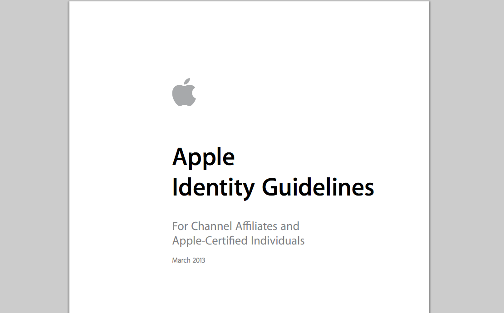
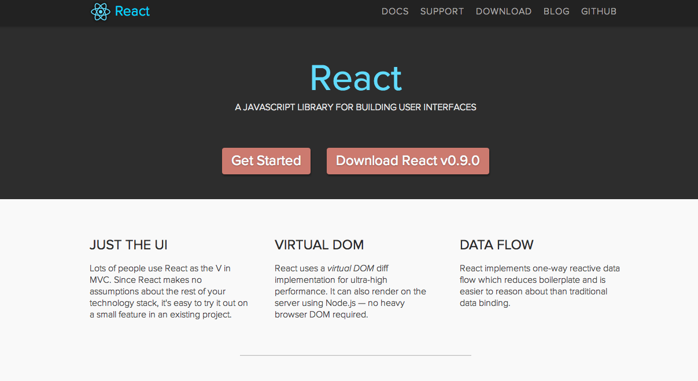
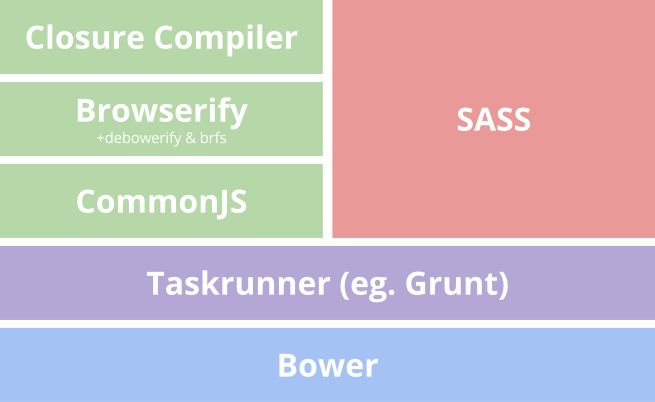

Introducing Origami
A practical journey to Web Components
by Andrew Betts, FT Labs (trib.tv / @triblondon)

Paid readership, digital vs print
Responsive.
PDF style guides
Living style guides

Component frameworks
Also our own Fruit Machine
Web components

Objectives
Components
Standards
Collaboration
Encapsulation
Composition
Going further
1. Rescue the old stuff
2. Don't build a monolith
3. Raise the bar
4. Make it easy
 scale(0.1,-0.1)' fill='%233b3b3b' stroke='none'><path d='M40 580 c0 -5 7 -10 15 -10 8 0 24 -9 35 -20 19 -19 20 -33 20 -239 0 -234 -3 -251 -51 -251 -10 0 -19 -7 -19 -15 0 -13 21 -15 130 -15 109 0 130 2 130 15 0 9 -9 15 -24 15 -47 0 -56 22 -56 140 l0 109 48 -5 c62 -6 89 -21 101 -55 20 -57 31 -31 31 71 0 82 -3 100 -15 100 -8 0 -15 -9 -15 -19 0 -31 -38 -51 -98 -51 l-53 0 3 98 3 97 77 3 c102 4 138 -6 163 -46 32 -50 46 -41 44 28 l-2 60 -233 0 c-149 0 -234 -4 -234 -10z' /><path d='M540 568 c-1 -13 -3 -40 -6 -60 -4 -30 -2 -38 10 -38 8 0 21 12 28 27 17 36 52 53 111 53 l47 0 0 -229 c0 -249 -3 -261 -56 -261 -15 0 -24 -6 -24 -15 0 -13 22 -15 135 -15 113 0 135 2 135 15 0 9 -9 15 -24 15 -53 0 -56 12 -56 261 l0 229 54 0 c57 0 99 -23 111 -60 4 -11 13 -20 22 -20 13 0 14 9 9 53 -3 28 -6 55 -6 60 0 4 -110 7 -245 7 l-245 0 0 -22z' /><path d='M1405 577 c-27 -7 -57 -27 -92 -64 -29 -29 -61 -53 -72 -53 -21 0 -71 -53 -71 -75 0 -28 61 -85 89 -85 34 0 75 41 77 78 2 49 36 40 89 -23 l48 -56 32 31 33 32 -58 51 c-32 29 -59 60 -59 69 -1 26 39 48 86 48 35 0 43 3 43 19 0 14 -12 22 -44 30 -51 12 -47 13 -101 -2z' fill='%23787067' /><path d='M1693 575 c-40 -17 -67 -67 -60 -111 5 -31 0 -38 -141 -166 -80 -73 -155 -140 -165 -149 -41 -33 -11 -109 43 -109 22 0 53 29 176 165 143 158 151 165 187 165 75 0 117 42 117 117 l0 35 -40 -36 c-42 -37 -48 -40 -74 -30 -27 10 -18 48 19 84 31 30 33 35 18 42 -27 10 -45 9 -80 -7z' fill='%23525252' /><path d='M1601 243 c-17 -21 -30 -42 -28 -46 7 -23 125 -147 149 -157 45 -20 93 23 81 71 -3 10 -42 52 -88 93 l-83 76 -31 -37z' fill='%23787067' /></g></svg>) Origami
Origami
Origami is...
- Specification (origami.ft.com)
- Tools
- Registry
- Build service
- Components!
- Modules (installable packages)
- Web services (APIs)
The spec
Agree a standard for building modules and services
Syntax and encapsulation (JS)
- No globals
- No modifying DOM on parse (or outside of owned DOM)
- Namespace events
- jsHint
Syntax and encapsulation (CSS)
- Namespace prefixes for classes
- No styling out of namespace
- No IDs, ever
- Minimise specificity. Use BEM or descendent selectors
o-tweet__avatar--verifiedo-tweet > p
- Consider
states (use ARIA):- hover, focus, busy, selected, disabled, active, invalid, pressed, expanded
- Express responsive behaviours by exposing mixins, not using media queries:
o-tweet--large,o-tweet--small
Module build pattern
"Cutting the mustard"

A simple logical test that sets a movable bar for running application JavaScript
if (querySelector in document) { ... }
The tools
Make it easy to comply with the spec requirements
Registry
Scan known git servers
Index version tags
Build every version of every module
Collect all the info on one page
Act as a directory of web services
Origami registry is public on the web so anyone can collaborate with us
Build service
http://build.origami.ft.com/bundles/js
?modules=o-tweet,o-ft-header@^1.3.7,o-hoverable@2
Build any combination of modules on demand
Build, bundle, compress, optimise, serve through CDN (gzipped)
Lock to a version or automatically upgrade with semver-compliant versioning
Allow developers to work without a build step
New tricks
Solutions for some of the problems we encountered
Polyfills
How do you avoid having the same polyfills in all your components, and ensure they only load when needed?
Declare in module metadata
{
"description": "Save for later button",
"browserFeatures": {
"required": [
"postmessage",
"localstorage"
],
"optional": [
"webaudio"
]
},
}Express requirements as Modernizr test names.
Cuts the mustard test
if (Modernizr.classlist && Modernizr.queryselector) {
Modernizr.load([
{
test : Modernizr.fontface,
nope : ['font-face-polyfill.js', 'font-face-polyfill.css']
},
{
test : Modernizr.websockets && window.JSON,
nope : 'websockets-polyfill.js',
complete : function() {
Modernizr.load('my-application-javascript-bundle.js');
}
}
]);
}Or with server-side feature detection
if (querySelector in document) {
['http://polyfill.io/', '/resources/js/my-application-bundle.js'].forEach(function(s) {
document.write('<script src="'+s+'"></' + 'script>');
});
}Yes, I used document.write and browser sniffing. Chill.
Fallbacks
How do you show NOSCRIPT content in browsers that 'support' script but fail to meet our criteria?
Meet the new NOSCRIPT
<div class='o-nojs-fallback'><div style="background:url(...)"></div></div>
Toggle visibility using classes on <html> tag:
.o-js .o-nojs-fallback { display: none }(But doesn't work in browsers that don't support CSS backgrounds: IE 1-3, Opera < 3)
Hover
What should a component do about hover-state? What if the component is loaded on a touch screen?
In the component:
import 'o-hoverable/main';
$o-hoverable-if-hover-enabled a:hover { ... }
In the product:
<body class='o-hoverable-on'>
...
</body>
Yes, this requires detecting a mouse. Sue me.
Asset loading
How does a component know what your URL structure is and where to load its static assets (images, fonts) from?
In the component:
var weatherUrl = require('o-assets').resolve('/data/2013/12/monthdata.csv', 'o-weather');
xhr.open("get", weatherUrl);
In the site:
var assets = require('o-assets');
assets.setGlobalPathPrefix('/resources');
assets.setModulePaths({
"o-weather": "weather"
});
Results in /resources/weather/data/2013/12/monthdata.csv
Summary
- We have super cool tech, but it's not consistent or well integrated
- We set out to build a spec and a set of tools for a better standard
- Registry & build service make it really easy to use
- It came with lots of interesting challenges
- Working in public is rewarding and fun
That's it!
Contact me:
- Email: andrew@labs.ft.com
- Twitter: @triblondon, @ftlabs
For jobs in London, visit labs.ft.com/jobs
Edge conference
The edge of the web
- San Francisco, September 20th, hosted by Adobe
- Watch it live from 10am on edgeconf.com